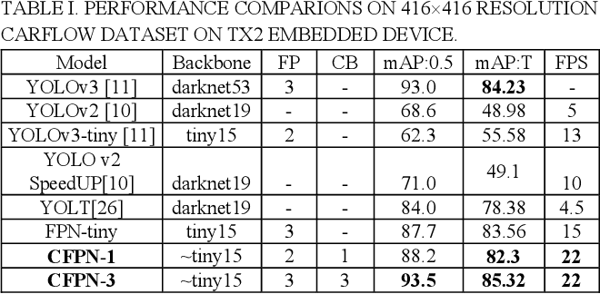

SMALLER OBJECT DETECTION FOR REAL-TIME EMBEDDED TRAFFIC FLOW ESTIMATION USING FISH-EYE CAMERAS
ICIP2019,Real-time embedded traffic flow estimation (RETFE) systems need accurate and efficient vehicle detection models to meet limited resources in budget, dimension, memory, and computing power. In recent years, object detection became a less challenging task with latest deep CNN-based state-of-the-art models, i.e., RCNN, SSD, and YOLO; however, these models cannot provide desired performance for RETFE systems due to their complex time-consuming architecture. In addition, small object (<30x30 pixels) detection is still a challenging task for existing methods. Thus, we propose a shallow model named Concatenated Feature Pyramid Network (CFPN) that inspired from YOLOv3 to provide above mentioned performance for the smaller object detection. Main contribution is a proposed concatenated block (CB) which has reduced number of convolutional layers and concatenations instead of time consuming algebraic operations. The superiority of CFPN is confirmed on the COCO and an in-house CarFlow datasets on Nvidia TX2. Thus we conclude that CFPN is useful for real-time embedded smaller object detection task.
Experimental result
Link: https://ieeexplore.ieee.org/abstract/document/8803719
CarFlow Results:
Table 1 tabulates the performance of CFPN and other stateof-the-art models on TX2 embedded device. All the models are pre-trained except two (FPN-1 and the last CFPN-3), then the models are trained and tested on train/val and train+val datasets, respectively, where image size was resized to 416x416. In the table, columns FP and CB refer to a feature pyramid and a concatenation block, respectively. Thus, FPN-tiny has feature pyramid with 3 tires and no CB. FPNtiny is modified version of FPN where the addition is replaced with concatenation. On the other hand, CFPN-1 has two tiers in its FP and one of them adopts CB; CFPN-3 has 3 tired FP where all of them have CBs. Highest three mAPs were 93.5, 88.2, and 87.7 for CFPN-3, CFPN-1, and FPNtiny, respectively. Furthermore, highest three FPS were 22, 22, and 15 for CFPN-3, CFPN-1, and FPN-tiny, respectively. YOLT has the highest mAP of 84.0; however, its FPS of 4.5 is the lowest. YOLOv3-tiny yields the highest FPS of 13; however, mAP is only 62.3. Moreover, YOLOv3 cannot be run on TX2 due to its deep architecture and computational complexity; however, its mAP:0.5 is 93.0 on GTX1080. Moreover, for label ‘T’ (vehicles in the top are of the image), the highest mAP is 85.32 for CFPN-3.
COCO Result:
Since our model is specialized for the small object detection, we chose COCO small objects (<32x32 pixels in extent) dataset to show our model’s superiority over the existing methods on small object detection task. Table 2 shows the performance comparisons with other state-of-the-art methods. All the results were re-trained and re-evaluated. RetinaNet is not compared due to its lower efficiency.